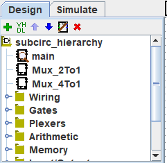
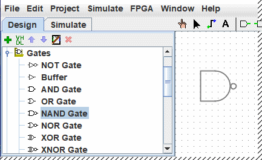
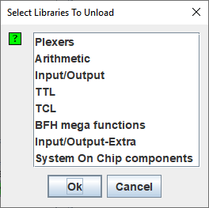

资源管理器窗格
|
 |
导航面板有两个功能。它可以以 模拟视图显示正在模拟的电路，或者像这里一样显示列表顶部的电路和下方由文件夹图标表示的库。这些库包含您可以在项目中使用的工具。 |
要访问库的组件，只需通过 双击对应的文件夹或 单击小三角键来打开库，然后通过 右键单击工具来选择该工具。然后将鼠标光标移动到画布上，工具的虚线轮廓将跟随鼠标光标，直到您在表面最后一次单击将其放置到所选位置。
下面，我已经打开了“门”库，并从中选择了与非门工具。您可以看到 Logisim 现在已准备好将与非门添加到电路中。

如果您浏览“门”库中的选项，您会发现我们之前不需要开发异或电路：它已内置于 Logisim 中。
当您创建项目时，它会自动包含几个库：
- 接线： 与导线直接交互的组件。
- 门： 执行简单逻辑功能的组件。
- 选择器： 更复杂的组合组件，如多路复用器和译码器。
- 算术： 执行算术运算的组件。
- 存储器： 记住数据的组件，如触发器、寄存器和 RAM。
- 输入/输出： 用于与用户交互的组件。
- TTL： 经典的 74 系列 TTL 组件，采用 DIL 封装。
- TCL： 我目前还没有为其编写文档。
- HDL-IP：目前暂无文档。
- BFH 宏功能：目前暂无文档。
- 输入/输出-扩展：目前暂无文档。
- 片上系统组件：一些 FPGA 中嵌入的组件。
库
Logisim 也允许您通过菜单 | 项目 | → | 加载库 |，或在项目资源管理器的根文件夹上 左键单击 来添加更多库。您可以看到 Logisim 有三类库。
- 内置库 是随 Logisim 分发的库。这些库在 库参考 中有文档说明。
- Logisim 库 是在 Logisim 内部构建并保存为 Logisim 项目到磁盘的项目。您可以在单个项目中开发一组电路（如本指南的 子电路 部分所述），然后将这组电路作为库用于其他项目。
-
JAR 库 是用 Java 开发但不随 Logisim 分发的库。您可以下载他人编写的 JAR 库，也可以按照本指南的 JAR 库 部分自行编写。开发 JAR 库比开发 Logisim 库困难得多，但组件可以更加复杂，包括属性、与用户交互等功能。内置库（除 Base 以外）使用与 JAR 库相同的 API 编写，因此很好地展示了 JAR 库可以支持的功能范围。
有些 JAR 库在分发时不包含关于从哪个 Java 类开始的信息。加载此类 JAR 时，Logisim 会提示您输入类名。该类名应由向您分发 JAR 文件的人提供。
要移除库，请选择菜单 | 项目 | → | 卸载库… |。如果某个库包含电路中正在使用的组件、工具栏中出现的组件，或已映射到鼠标按钮的组件，Logisim 会阻止您卸载该库。

也可以通过在被禁用的库上 左键单击 来实现这一点。
顺便说一下，从技术上讲，库包含的是工具，而不是组件。因此，在 Base 库中，您会找到 手形 工具（ ）、编辑 工具（
）、编辑 工具（ ），以及其他不直接对应单个组件的工具。不过，大多数库只包含用于添加单个组件的工具。
），以及其他不直接对应单个组件的工具。不过，大多数库只包含用于添加单个组件的工具。
下一节： 工具栏。